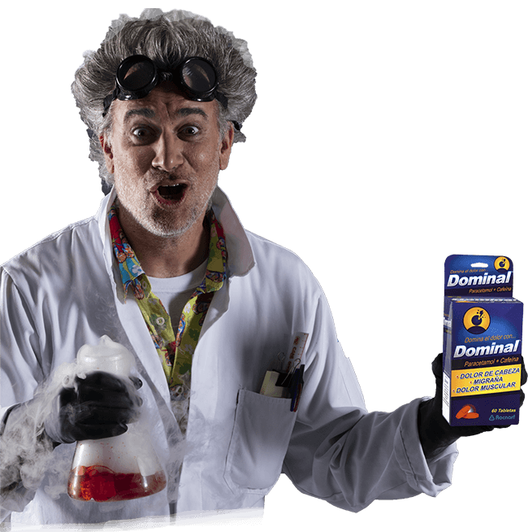

Dr. Einstein Mayorga
Su carrera se dispara cuando, como estudiante de medicina, es encomendado a realizar sus prácticas de rural en un pueblo alejado en lo profundo de la selva de Mashpi. Mientras "El Doc" atendía a la gente durante el día, pasaba las noches desarrollando fórmulas para los pacientes que sufrían, quienes no usaban traje pero tenían dolores muy salvajes. En la actualidad, su secreto ya es de la comunidad, y como Dominal lo conocen, los pacientes que de dolores ya no se encogen.